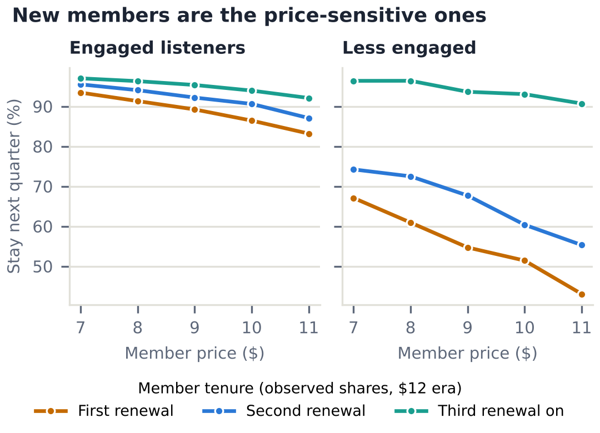

Lorehaven re-priced customers by a random draw: inside the discounting regions, whether a prospect got a discount (25%) and its size (an equal share at each of $1–$5) were random, and the groups are balanced on every observable (propensity scores, ad exposure, history, sub-region, quarter). So the difference between two group averages is the effect of price, with no model needed. I report sign-up rates for prospects and stay rates for members at each price, by segment and tenure, with counts (every cell has at least 556 customer-quarters). For the $12 cut, which was not randomized, I compared list-price sign-up in the cut regions with Panem, which never changed price. To compare policies over time, a projection follows 1,000 new prospects quarter by quarter: new members = prospects × sign-up rate at their price; members kept = members × stay rate for their tenure and price. It only looks up observed rates (2019 at the $12 base; 2017–18 at $15), so it never goes beyond tested prices. As a cross-check, regression models (fixed-effect logits, inverse-propensity weighting, a fitted-curve simulator) answer the same 12 questions in robustness/: all 12 agree in direction, and sizes differ by at most 14%.

1. A $5-off discount mostly brings in people who would not otherwise join (Fig. 1). At the $12 base, 69% of warm listeners who join with $5 off would not have joined at list price (join rate at $5 off minus at list, over join rate at $5 off; assumes nobody is put off by a discount). It is 62% for win-backs (engaged former members) and 96% for the "cold" majority with low podcast engagement. The discount is only paid by those who join, so every segment earns more in its first quarter with one. First-quarter revenue per prospect is $0.89 today and $1.76 if everyone got $5 off (the average of the random $5 groups, weighted by segment size). Tuning the discount by segment adds little ($1.78).
2. Established members mostly stay anyway; new members are the price-sensitive ones (Fig. 2). At $11, 92% of established engaged members stay, against 83% at their first renewal. For less-engaged members at their first renewal, the share who stay rises from 43% at $11 to 67% at $7. Today every member gets a random $1–$5 discount every quarter, which spends most of the member budget on people who would stay at a higher price.
3. The $12 base cut likely raised sign-ups, but its size is not pinned down. Comparing the same seasons of 2018 and 2019, list-price sign-up in the cut regions rose 3.1pp more than in Panem. But before the cut, quarter by quarter, the gap to Panem already ranged from -2.6pp to -0.1pp with no price change, so a few points of that could be noise in the one comparison region. The direction is clear (below Panem in every quarter before, above in every quarter after); the size is not.

Guardrails to watch. Revenue per member-quarter barely moves ($9.27 vs $9.17). Average churn rises (13.5% vs 11.3%) because the member base holds more new members. Discounts given away roughly double ($12.2k vs $6.2k per 1,000 prospects), and they buy 423 members at the end against 259.
Before production. Assign arms once per customer (a salted hash of customer ID) and keep them. Log the assigned and the delivered discount and the price paid, tagged with the policy version. Monitor sign-up, churn, discount cost and arm balance against preset thresholds. Keep a one-switch rollback to today's policy.
Limits. The projection reuses the average 2019 quarter forever (no seasonality or marketing changes), so it ranks policies rather than forecasting revenue. Standard errors here treat customer-quarters as independent; customers repeat, so true errors are somewhat larger (the appendix reports clustered ones). Whether a deep discount only pulls sign-ups forward cannot be measured from this data; the persistent holdout measures it directly. Revenue is net of discounts; content costs are excluded.
I used Claude (agentic, with three role-scoped agents: analyst, a read-only critic with fresh context, and a tool-builder), with every prompt versioned and every accepted, edited or rejected suggestion logged (logs/decision_log.csv). Where it fell short: the first models pooled segments with shared fixed effects (a wrong retention slope for less-engaged members), valued members with a steady-state formula that ignored tenure and re-joining, and one sensitivity check charged lapsed customers the wrong price. The critic raised 20 issues; 17 were accepted, 2 modified and 1 rejected with evidence. Simplification: the first version leaned on regression machinery that the randomized design does not need. I rebuilt the main analysis on group averages and a lookup-table projection so every step can be checked by hand, and kept the model-based version as an appendix that confirms it. How I verified: fast tests on every module (synthetic data for the rate tables, accounting checks for the projection), the simple-vs-model comparison above, and every number in this note filled in from metrics.json by the build script.